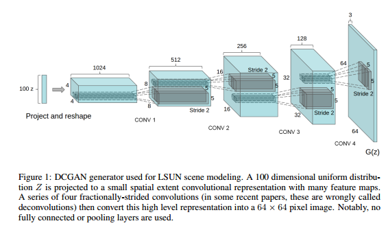
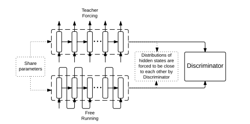

Generating and Understanding Multi-layered Music
Midyear presentation
Graham Spinks, February 2017
PART 1
Existing approaches (literature review)
Non-neural network
- Machine learning: 1. Deconstruction, 2. common signatures 3. compatibilty (recombination) [1]
- Human - Machine interaction with statistical ML, "Daddy's Car" in the style of the beatles , Sony CSL
RNN's are most suitable for variable-length input
But: vanishing gradient problem
- Music events often bridge several time steps: chord changes, chorus, ...
- -> how can we model long-term dependencies
- Solution: LSTM / RBM / Attention models / GRU's
RNN approaches
RNN-RBM
RNN-RBM: Restricted Boltzmann Machine to predict conditional distribution of next timestep given previous timesteps [7], [8]
Polyphonic and nice sounding music but no sense of time and only plays a couple of chords
Reinforcement learning
RL tuner by Magenta: creates RL reward function that teaches the LTSM model to follow certain rules[9]
Tries to solve problem of excessively repeated tokens.
"Any beginning music student learns that groups of notes belong to keys, chords follow progressions, and songs have consistent structures made up of musical phrases."
DeepBach
Given a melody, create convincing harmonies, trained on bach chorales [10]
Uses known information of past and future melody to create harmony for the current time step.
Good results but limited flexibility due to chosen data representation.
DeepBach [10]
Other approaches: Non-symbolic audio
VRNN: RNN combined with variational autoencoder [40]
Other approaches: Non-symbolic audio
Wavenet: fully convolutional Neural Network [41]
Other approaches: Images
Image generation: usually CNN
Other approaches: Images
DRAW: Deep Recurrent Attentive Writer
LSTM sequentially draws an immage with fully differentiable attention network [19], [21]
Training LSTM's
Exploding gradient rather than vanishing gradient [30]
- Impose a hard constraint on the norm of the gradient
- Ensure that minibatches are more or less the same size for training speedup
Recurrent batch normalization
Leads to faster convergence and improved generalization [31]
Weight normalization
Similar to batch normalization but simpler and less computational overhead [32]
Generative Adverserial Networks
Train two models in a minimax game [50]:
A generative model G that captures the data distribution
A discriminative model D that estimates the probability that a sample came from the training data rather than G
Alternative versions: LAPGAN [51], DCGAN [52]
Achieve good results for image generation
The learned represenation space has smooth transitions [52]
Not easy to train adverserial models with recurrent networks as the discriminator tends to determine whether it's a fake after just a few timesteps
Recently, a C-RNN-GAN has been trained, modeling the whole joint probability of a sequence, for real-valued data (midi) [53]
So far, GAN's have only been applied to real-valued data, as the gradient of the loss from D is used to adapt the output of G in the right direction
SeqGAN was developed for sequences of symbols; generation is considered a sequential decision making process with RL [54]
This approach requires a task-specific sequence score (eg BLEU in MT) for the reward
SeqGAN: LSTM for G, CNN for D, but other architectures are possible
Pretraining with ML, then alternative training of G and D

Adverserial Professor Teaching: iteratively run generator freely and with input sequence [55]
Avoid gradient problem of discrete output by training discriminator on hidden states
Tries to solve: for longer sequences RNN's tend to diverge to state spaces which were never observed during training
Frequently used data sources
- Piano-midi.de is a classical piano MIDI archive that was split according to Poliner & Ellis (2007).
- Nottingham is a collection of 1200 folk tunes with chords instantiated from the ABC format
- MuseData is an electronic library of orchestral and piano classical music from CCARH.
- JSB chorales refers to the entire corpus of 382 fourpart harmonized chorales by J. S. Bach with the split of Allan & Williams (2005).
Evaluating the results
- Listening tests (Mechanical Turk)
- Battle of GAN's
- Plagiarism tests
- BLEU sequence score [54]
Understanding neural networks
Visualizing the "neuron" firings in RNN's [21]

Activation maximization: find the image tha maximally activates a certain neuron [22]
Code inversion: synthesize an image that produces similar activation vector as a real image at a particular layer [23]
Inproved activation maximization: Multifaceted feature visualization [24]
PART 2
Proposed approach
Representation
Represent music as a sequence of words: kern representation (humdrum)
Downside of kern representation: note intensity levels that are present in MIDI notation are lost
Possible follow up: attempt same approach with MIDI representation
Specific datasets for scientific research, both monophonic and polyphonic: http://kern.ccarh.org/
Use word embeddings to represent the music in a dense, continuous space
Existing NN algorithms: CBOW, Skip-Gram model [60]
We expect similar notes to be represented near eachother [source]
As word embeddings have been useful in many NLP tasks, we expect the same for music generation
For this thesis we propose two possible implementations for music generation: SeqGAN and Adverserial Professor Teaching with word embeddings
SeqGAN model with word embedding representation; gradient is computed over continuous space gradient rather than policy gradient; faster convergence expected
Eg. LSTM for G, CNN for D, but other architectures are possible
Pretraining with ML, then alternative training of G and D
Adverserial Professor Teaching: iteratively run generator freely and with input sequence [55]
Adverserial Professor Teaching with word embeddings: no need to train over hidden states; faster and better convergence expected
Subsequent analysis of learned features by neuron visualization [21]
In the case of Professor Teaching we expect to be able to explore the state space [52]
References
- [1] Experiments in Musical Intelligence
- [3] https://highnoongmt.wordpress.com/2015/05/22/lisls-stis-recurrent-neural-networks-for-folk-music-generation/
- [4] A First Look at Music Composition using LSTM Recurrent Neural Networks, Douglas Eck, Jurgen Schmidhuber
- [5] Composing Music With Recurrent Neural Networks, Daniel Johnson
- [6] Empirical Evaluation of Gated Recurrent Neural Networks on Sequence Modeling, Junyoung Chung, Caglar Gulcehre, KyungHyun Cho, Yoshua Bengio
- [7] Modeling and generating sequences of polyphonic music with the RNN-RBM, Sid Sigtia
- [8] Modeling Temporal Dependencies in High-Dimensional Sequences: Application to Polyphonic Music Generation and Transcription, Nicolas Boulanger-Lewandowski, Yoshua Bengio, Pascal Vincent
- [9] Tuning Recurrent Neural Networks with Reinforcement Learning, Natasha Jaques (Magenta)
- [10] DeepBach: a Steerable Model for Bach chorales generation, Gaetan Hadjeres, Francois Pachet
- [15] Inceptionism: Going Deeper into Neural Networks, Alexander Mordvintsev, Christopher Olah, Mike Tyka
- [19] DRAW: A Recurrent Neural Network For Image Generation, Karol Gregor, Ivo Danihelka, Alex Graves, Danilo Jimenez Rezende, Daan Wierstra
- [20] A Neural Algorithm of Artistic Style, Leon A. Gatys, Alexander S. Ecker, Matthias Bethge
- [21] The unreasonable effectiveness of recurrent neural networks, Andrej Karpathy
- [22] Visualizing Higher-Layer Features of a Deep Network, Dumitru Erhan, Yoshua Bengio, Aaron Courville, and Pascal Vincent
- [23] Visualizing deep convolutional neural networks using natural pre-images, Aravindh Mahendran, Andrea Vedaldi
- [24] Multifaceted Feature Visualization: Uncovering the Different Types of Features Learned By Each Neuron in Deep Neural Networks, Anh Nguyen, Jason Yosinski, Jeff Clune
- [30] Sequence to sequence learning with neural networks, Ilya Sutskever, Oriol Vinyals, Quoc V. Le
- [31] Recurrent Batch Normalization, Tim Cooijmans, Nicolas Ballas, Cesar Laurent, Caglar Guelcehre
- [32] Weight Normalization: A Simple Reparameterization to Accelerate Training of Deep Neural Networks, Tim Salimans, Diederik P. Kingma
- [40] A Recurrent Latent Variable Model for Sequential Data, Junyoung Chung, Kyle Kastner, Laurent Dinh, Kratarth Goel, Aaron Courville, Yoshua Bengio
- [41] Wavenet: a generative model for raw audio, Aaron van den Oord, Sander Dieleman, Heiga Zen, Karen Simonyan, Oriol Vinyals, Alex Graves, Nal Kalchbrenner, Andrew Senior, Koray Kavukcuoglu
- [50] Generative Adversarial Networks, Ian J. Goodfellow, Jean Pouget-Abadie, Mehdi Mirza, Bing Xu, David Warde-Farley, Sherjil Ozair, Aaron Courville, Yoshua Bengio
- [51] Deep Generative Image Models using a Laplacian Pyramid of Adversarial Networks, Emily Denton, Soumith Chintala, Arthur Szlam, Rob Fergus
- [52] Unsupervised Representation Learning with Deep Convolutional Generative Adversarial Networks, Alec Radford, Luke Metz, Soumith Chintala
- [53] C-RNN-GAN: Continuous recurrent neural networks with adversarial training, Olof Mogren
- [54] SeqGAN: Sequence Generative Adversarial Nets with Policy Gradient, Lantao Yu, Weinan Zhang, Jun Wang, Yong Yu
- [55] Professor Forcing: A New Algorithm for Training Recurrent Networks, Anirudh Goyal, Alex Lamb, Ying Zhang, Saizheng Zhang, Aaron Courville, Yoshua Bengio
- [60] Efficient Estimation of Word Representations in Vector Space, Tomas Mikolov, Kai Chen, Greg Corrado, Jeffrey Dean